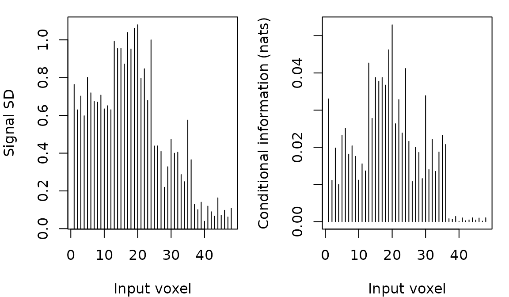

Pattern models: whole-brain fit, regional access
Source:vignettes/Pattern_Model.Rmd
Pattern_Model.RmdA pattern model learns a low-rank relationship between task targets and brain measurements across the whole feature domain. From the same fit you can predict held-out targets, inspect where model-implied signal varies, and ask how much of the prediction remains accessible within a region.
The distinction matters when a region helps cancel correlated noise. Its forward loading can be zero even though observing it improves prediction. Forward patterns and decoding weights describe different aspects of the fit.
Fit and evaluate a classification model
This small example creates two signal territories and a third territory that shares noise with the first. Rows represent observations; columns represent voxels. Class labels are balanced within each of three runs.
n <- 120
p <- 48
class <- factor(rep(c("a", "b", "c"), length.out = n))
run <- rep(1:3, each = 40)
code <- model.matrix(~ class - 1)
X <- matrix(rnorm(n * p), n, p)
shared_noise <- rnorm(n, sd = 2)
X[, 1:12] <- X[, 1:12] + 1.2 * (code[, 1] - code[, 2]) + shared_noise
X[, 13:24] <- X[, 13:24] + 1.2 * (code[, 2] - code[, 3])
X[, 25:36] <- X[, 25:36] + shared_noise
space <- neuroim2::NeuroSpace(c(4, 4, 3), c(1, 1, 1))
mask <- neuroim2::NeuroVol(array(1, c(4, 4, 3)), space)
images <- neuroim2::NeuroVec(array(t(X), c(4, 4, 3, n)),
neuroim2::NeuroSpace(c(4, 4, 3, n), c(1, 1, 1)))
dataset <- mvpa_dataset(images, mask = mask)
design <- mvpa_design(data.frame(class, run), y_train = ~ class,
block_var = ~ run)
spec <- pattern_model(dataset, design, rank = 2,
noise = list(type = "diag_lowrank", rank = 1))
result <- run_global(spec, return_fits = TRUE, refit = TRUE)
performance(result)
#> # A tibble: 1 × 4
#> Accuracy AUC logloss rank_mean
#> <dbl> <dbl> <dbl> <dbl>
#> 1 0.983 0.998 0.0532 2The performance table scores held-out runs. The refit uses every
training row and supplies descriptive maps; it is not the fit used to
report validation accuracy. Here the rank is fixed at two. With
rank = "auto", rank is selected inside each outer training
split. A spatial penalty can be added with
penalty = list(sparse = "auto", signed_smooth = 1); it acts
on forward patterns, and its strength is selected using held-out
decoding loss.
return_fits = TRUE retains the fold fits needed for
locality and diagnostics. Retaining these objects costs memory,
especially with many resamples.
Read invariant maps
signal_sd <- model_importance(result$refit, type = "signal_sd")
information <- model_importance(result$refit, type = "conditional_info")
oldpar <- par(mfrow = c(1, 2), mar = c(4, 4, 1, 1))
plot(signal_sd, type = "h", xlab = "Input voxel", ylab = "Signal SD")
plot(information, type = "h", xlab = "Input voxel", ylab = "Conditional information (nats)")
par(oldpar)Signal SD is the standard deviation implied by the fitted signal
covariance, sqrt(diag(A Phi A')), expressed in the original
measurement units. It includes all fitted task directions. Conditional
information asks what a voxel adds once the other voxels have been
observed. It can be positive in a noise canceller with zero signal SD.
Finite-sample estimated loadings are rarely exactly zero without
sparsity, so the simulated nuisance territory need not have an exactly
zero estimated signal map.
Conditional information is a working Gaussian score-model quantity, in nats. For classification it is not empirical mutual information about discrete class labels. Both maps are descriptive, not significance maps.
Using model_importance(result) returns a spatial image
through the dataset’s map builder. Using result$refit
returns a vector aligned to input columns; screened columns are
NA. Forward component patterns and calibrated decoder
weights are available from model_patterns(fit, "forward")
and model_patterns(fit, "weights"). Their individual
columns depend on the chosen component coordinates. Multibasis datasets
require separate channel maps; automatic channel aggregation would
change the quantity being shown.
Ask what each region can decode
regions <- list(signal_1 = 1:12, signal_2 = 13:24,
shared_noise = 25:36, background = 37:48,
whole_domain = 1:48)
local <- local_performance(result, regions)
local[local$metric == "Accuracy", ]
#> region metric whole_brain local_restricted
#> 1 signal_1 Accuracy 0.9833333 0.3250000
#> 4 signal_2 Accuracy 0.9833333 0.9750000
#> 7 shared_noise Accuracy 0.9833333 0.3916667
#> 10 background Accuracy 0.9833333 0.2916667
#> 13 whole_domain Accuracy 0.9833333 0.9833333In this realization, the first signal territory is near chance on its own despite nonzero loadings. The whole-domain prediction benefits from observing features beyond that territory.
Each entry in regions specifies input matrix
column positions, not voxel IDs. For every fold, the query
keeps the whole-brain forward pattern within the region and restricts
the residual covariance to Psi_RR. It then recomputes the
decoder and predicts the same held-out observations used in the
whole-brain ledger. Cropping whole-brain decoding weights would retain
noise cancellation terms that require unobserved features and gives a
different, generally incorrect answer.
The regional score measures access under the shared whole-brain
representation. It does not estimate the best accuracy any separately
trained local model could reach. A finite-sample region can outperform
the whole-brain prediction. A noise-only territory may contribute
conditionally while decoding poorly alone. For independent ROI
comparisons, independent_roi accepts a named list of
fold-resolved ledgers with matching rows, folds, truth, and baselines.
Repeated assessments are pooled to one prediction per observation before
any of these methods is scored.
Rotate a display and compare folds
view <- rotate_patterns(result$refit)
view$reconstruction_error
#> [1] 7.198298e-16
result$component_stability[, c("fold1", "fold2", "rank1", "rank2", "n_common", "overlap")]
#> fold1 fold2 rank1 rank2 n_common overlap
#> 1 1 2 2 2 48 0.9213209
#> 2 1 3 2 2 48 0.8117325
#> 3 2 3 2 2 48 0.7999901Rotation changes display coordinates, preserving
L_b H L_t' = A C'. The view retains the original fit, so
predictions and invariant maps remain exactly unchanged. Its matrices
use fitted feature units and whitened target coordinates; the view also
stores their back-transforms. Only orthogonal rotations are
supported.
Stability compares spatial column spaces in original feature units using principal angles on features retained in both folds. An overlap of one means the two nonempty subspaces coincide. Different ranks reduce overlap even if the smaller space lies within the larger. This is a subspace diagnostic, not a test that individual components or a particular rank are supported.
vapply(result$haufe_diagnostics, function(x) x$relative_discrepancy, numeric(1))
#> [1] 0.4278746 0.5853670 0.7012616The Haufe diagnostic compares empirical held-out covariance patterns
with the model-implied patterns using calibrated scores. Large
discrepancies can flag sampling noise or model misspecification. They
are not p-values. Fold-level row identities are checked against training
IDs. For an additional independent sample, use
pattern_haufe(fit, X_holdout, observation_ids) and supply
identifiers in the fit’s training-ID namespace. Automatic results use
train:<row ID> for training/CV rows and
test:<row ID> for an external test partition; the
user must ensure an external partition contains genuinely independent
observations.
Decode continuous feature targets
The same model accepts multiple continuous targets. The example below uses two continuous measurements generated with a low-rank encoding relationship.
features <- matrix(rnorm(n * 2), n, 2,
dimnames = list(NULL, c("feature_1", "feature_2")))
brain <- matrix(rnorm(n * p), n, p)
brain[, 1:12] <- brain[, 1:12] + features[, 1]
brain[, 13:24] <- brain[, 13:24] + features[, 2]
continuous_data <- mvpa_dataset(
neuroim2::NeuroVec(array(t(brain), c(4, 4, 3, n)),
neuroim2::NeuroSpace(c(4, 4, 3, n), c(1, 1, 1))), mask = mask)
continuous_design <- mvpa_design(data.frame(id = 1:n, run),
cv_labels = 1:n, targets = features,
block_var = ~ run)
continuous <- run_global(pattern_model(continuous_data, continuous_design, rank = 2),
return_fits = TRUE)
performance(continuous)
#> # A tibble: 1 × 4
#> R2 RMSE cor rank_mean
#> <dbl> <dbl> <dbl> <dbl>
#> 1 0.903 0.304 0.950 2
local_performance(continuous, list(first = 1:12, second = 13:24))
#> region metric whole_brain local_restricted
#> 1 first R2 0.9030424 0.4457892
#> 2 first RMSE 0.3038478 0.6301593
#> 3 first cor 0.9503506 0.5334221
#> 4 second R2 0.9030424 0.3383942
#> 5 second RMSE 0.3038478 0.7056156
#> 6 second cor 0.9503506 0.4523845Predictive R-squared uses each fold’s training-target mean as its baseline; it is not squared correlation and can be negative. The reported aggregate averages per-response R-squared. Targets are centred and whitened using training rows only. Predictions are returned in the original target units.
Choose the model for the question
| Question | Model family |
|---|---|
| Whole-domain forward patterns and regional access under one covariance-aware fit | pattern_model |
| Decode feature vectors within independently fitted regions | feature_rsa_model |
| Voxelwise encoding from grouped predictors | banded_ridge_model |
| Map between perception and retrieval domains | remap_rrr_model |
| Find locally predictive neighborhoods using separate local fits | Searchlight analysis |
The current noise model combines diagonal variance and a few shared residual components. It may miss richer local correlations. Signed Laplacian smoothing encourages neighboring loadings to agree; it does not provide a coherent support envelope for alternating-sign fine-scale codes. Rank tests and the support-envelope extension remain separate work.
To save retained fits, ledgers, and refit maps, call
save_results(result, "pattern-output"). The RDS preserves
the result object; spatial refit maps are also written as images for
supported datasets.
For independent loading tests and component comparisons, continue with Confirming a frozen pattern model.